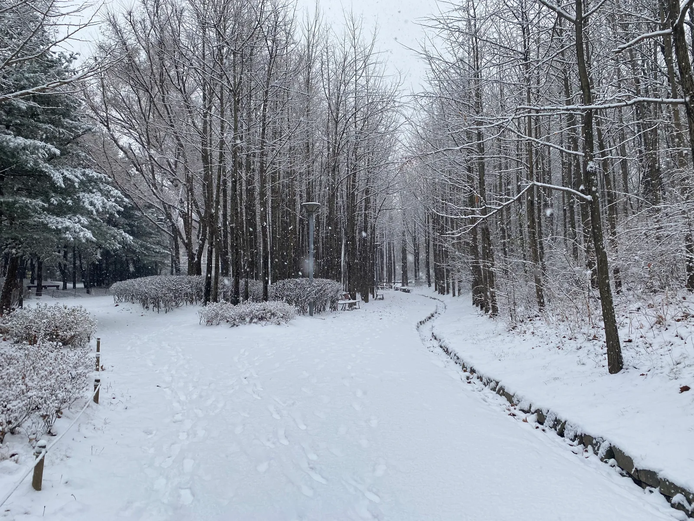
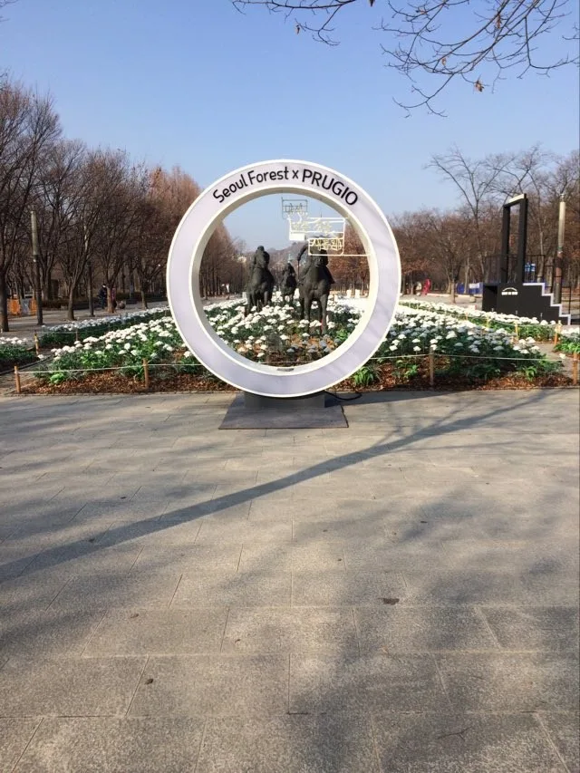
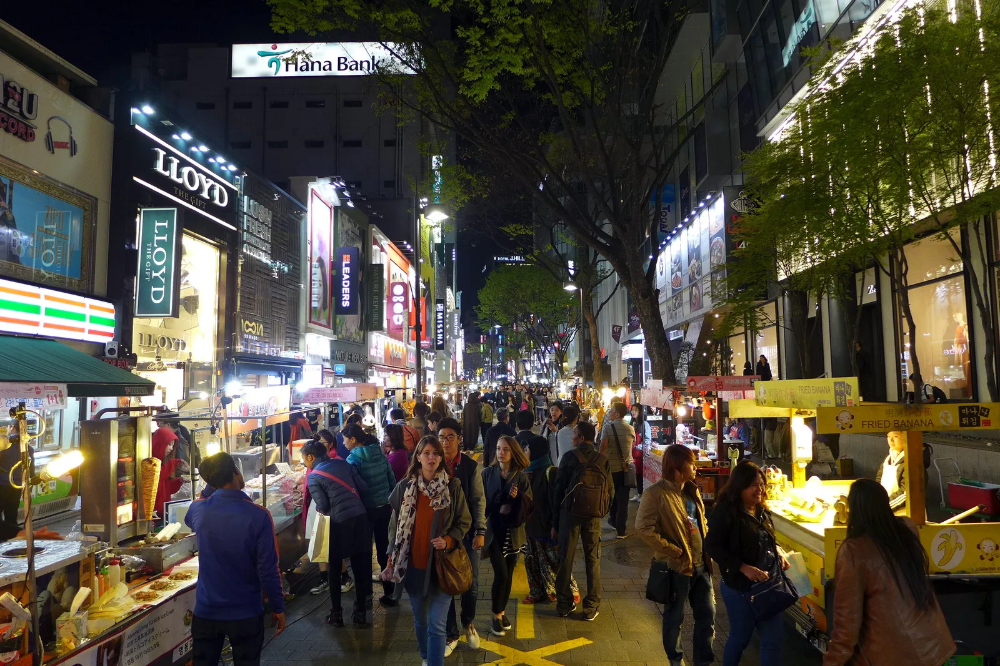
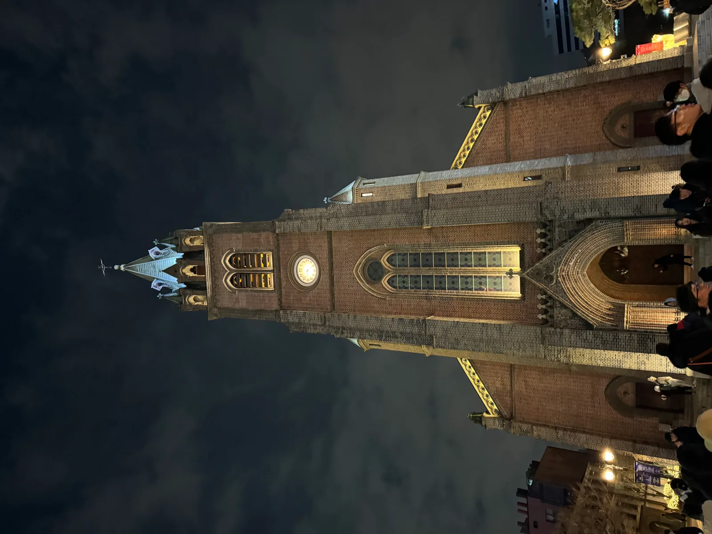
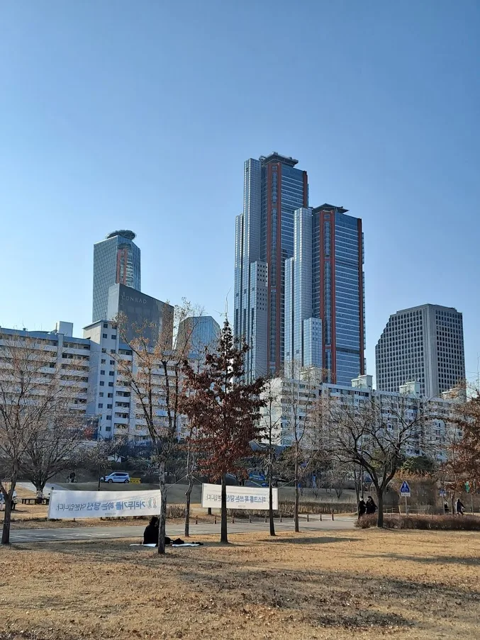
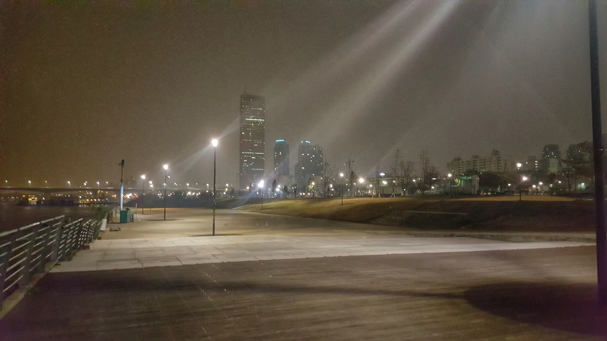
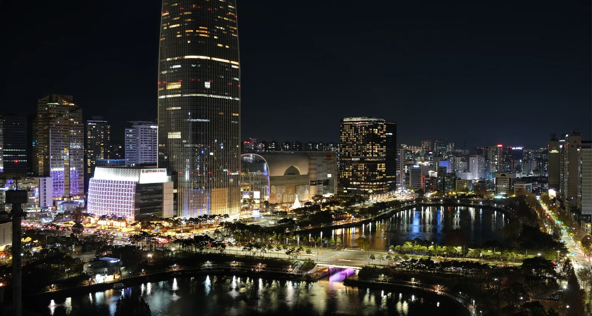

▲ 광화문광장은 매년 12월 15m 높이 대형 트리와 함께 크리스마스 마켓으로 꾸며진다. 사진은 2024년 야경
12월이 되면 서울 시내 몇 군데는 매년 비슷한 자리에 트리를 세우고 마켓을 연다. 문제는 정확한 날짜다. 광화문은 마켓 운영 시간이 저녁 5시 반부터고, 명동은 점등 직후냐 점등 한참 후냐에 따라 인파 밀도가 확 달라진다. 2026년 12월 일정은 아직 대부분 공식 발표 전이지만, 2025년 실제 운영 사례를 기준으로 어느 시기에 어떤 모습일지 미리 가늠해봤다.
1. 서울숲 언더스탠드에비뉴 — 아기자기한 소규모 마켓

▲ 겨울철 서울숲. 언더스탠드에비뉴 일대에서 매년 12월 소규모 크리스마스 마켓이 열린다 ⓒ Wikimedia Commons
서울 성동구 왕십리로에 위치한 서울숲 언더스탠드에비뉴는 컨테이너 상점들이 모여 있는 복합 공간으로, 2025년에는 12월 12일(금)부터 21일(일)까지 10일간, 매일 오전 10시부터 오후 4시 30분까지 크리스마스 마켓을 운영했다. 중앙광장에는 설치미술가 배수영 작가가 맥도날드 컵과 박스를 재활용해 만든 '업사이클 소셜 트리'가 세워져 다른 대형 마켓과 다른 아기자기한 분위기를 냈다. 대형 트리나 화려한 조명보다는 소규모 공방·플리마켓 위주라 붐비지 않고 여유롭게 둘러보기 좋다는 평이 많다.

▲ 서울숲 공원 전경. 언더스탠드에비뉴는 공원 내 일부 구역에 자리한다 ⓒ Wikimedia Commons
2026년 일정은 아직 공식 발표 전이지만, 2023~2025년 모두 12월 둘째~셋째 주에 열린 전례를 보면 올해도 12월 중순 전후로 열릴 가능성이 크다. 방문 전 언더스탠드에비뉴 공식 채널에서 확정 일정을 확인하는 게 안전하다.
2. 광화문광장 — 15m 트리와 '겨울동화 속 산타마을'
서울의 가장 큰 규모의 크리스마스 행사는 단연 광화문 마켓이다. 2025년에는 12월 12일(금)부터 31일(수)까지 20일간, 매일 오후 5시 30분부터 9시 30분까지(12월 31일은 자정까지 연장) 광화문광장 전체를 무대로 열렸다. 광장 한복판에는 높이 15m 대형 트리가 불을 밝혔고, 주변으로 호두까기 인형의 집·진저브레드 쿠키의 집·루돌프가 끄는 회전목마 등 포토존이 배치됐다. 2025년 테마는 '겨울동화 속 산타마을'이었다.
같은 기간 청계천 일대(청계광장~쌍한교)에서는 서울빛초롱축제가 함께 열렸다. 2025년 주제는 '나의 빛, 우리의 꿈, 서울의 마법'으로, 1887년 경복궁 최초의 전등을 재현한 조형물, 조선시대 선비의 '갓'을 모티브로 한 조명, 청계천 복원 20주년 기념 특별전 등이 전시됐다. 광화문과 청계천을 묶어 걸으면 서울 도심 크리스마스 분위기를 한 번에 즐길 수 있다.
광화문광장 공식 홈페이지에서 확인 가능2026년 광화문 마켓·서울빛초롱축제 일정은 아직 공지되지 않았다. 다만 2023~2025년 모두 12월 둘째 주에 시작해 12월 31일까지 이어진 만큼, 올해도 비슷한 시기에 개최될 것으로 예상된다. 확정 공지는 광화문광장 공식 홈페이지와 서울빛초롱축제 홈페이지(stolantern.com)를 통해 나온다.
3. 명동 — 미디어파사드 거리와 혼잡 시간대 피하는 법

▲ 야간 조명으로 물든 명동 거리. 크리스마스 시즌에는 인근 20여 개 건물이 외벽 미디어파사드에 참여한다 ⓒ Wikimedia Commons
명동은 별도 입장료나 행사 부스 없이도 거리 전체가 크리스마스 명소가 되는 곳이다. 2025년에는 명동 일대 20여 개 건물이 외벽을 활용한 미디어파사드 연출에 참여했고, 조형물 전시·조명쇼·주말 버스킹·성탄 점등쇼·야간 마켓 등이 함께 진행됐다. 가장 붐비는 시간대는 저녁 7~8시이며, 점등 직후인 5시 반이나 인파가 빠지는 밤 9시 이후를 노리면 훨씬 여유롭게 사진을 찍을 수 있다는 게 현지 방문 후기의 공통된 팁이다.

▲ 명동성당도 크리스마스 시즌 야간 조명으로 꾸며진다 ⓒ Wikimedia Commons
교통은 지하철 4호선 명동역이나 2호선 을지로입구역을 이용하는 게 시간을 아끼는 방법으로 꼽힌다. 명동은 특정 주최 측이 일정을 발표하는 구조가 아니라 상권 전체가 시즌 내내 조명을 유지하는 방식이라, 보통 11월 말~12월 초부터 1월 초까지 조명이 켜져 있다고 보면 된다.
4. 여의도 한강공원 — 겨울 한강페스티벌, 세부 일정은 미발표

▲ 여의도 한강공원. 서울시 한강사업본부는 매년 계절별 한강페스티벌 프로그램을 운영한다 ⓒ Wikimedia Commons
서울시 한강사업본부는 반포·여의도·뚝섬·잠원·망원 등 5개 한강공원 일대에서 봄·여름·가을·겨울 시즌별로 한강페스티벌을 운영한다. 여의도 한강공원은 이 중 핵심 무대 중 하나로, 겨울 시즌에는 야간 조명과 드론 라이트쇼 등 볼거리가 포함되는 경우가 많았다. 다만 2026년 겨울 시즌 세부 프로그램과 점등·행사 일정은 이 기사 작성 시점(2026년 9월) 기준으로 공식 발표되지 않았다.

▲ 63빌딩과 여의도 한강공원 야경. 겨울철에는 강변 조명이 더해져 야경 명소로 꼽힌다 ⓒ Wikimedia Commons
정확한 겨울 시즌 프로그램은 한강사업본부 공식 홈페이지 행사·공연 정보 게시판에서 매년 11월경 공지되는 편이므로, 12월 방문을 계획한다면 출발 전 확인이 필요하다.
한강사업본부 행사 정보에서 확인 가능5. 스타필드 하남 — 매년 바뀌는 테마, 11m급 트리

▲ 서울 잠실 롯데월드타워 야경. 연말 시즌에는 롯데월드타워·롯데월드몰 일대도 조명 장식으로 꾸며진다 ⓒ Wikimedia Commons
대형 복합쇼핑몰들은 매년 다른 캐릭터·컨셉과 협업해 크리스마스 팝업을 연다. 2025년 스타필드 하남은 글로벌 게임 '브롤스타즈'와 협업한 '메리 브롤리마스' 이벤트를 11월 14일부터 이듬해 1월 1일까지 운영했다. 호텔 콘셉트 공간 '스노우텔'을 꾸미고 그 안에 높이 11m 대형 트리를 세웠으며, 인터랙티브 LED 체험존과 게임존도 함께 마련했다. 스타필드 5개 지점(하남·고양·안성·수원·코엑스몰)의 2025년 크리스마스 캠페인은 한 달 만에 누적 방문객 1000만 명을 기록했다고 알려졌다.
스타필드·롯데월드몰 등 대형 쇼핑몰은 협업 캐릭터와 테마가 매년 바뀌는 구조라, 2026년 구체적인 컨셉과 트리 디자인은 통상 10~11월경 각 몰 공식 채널을 통해 공개된다. 다만 개장 시기 자체는 예년처럼 11월 중순~1월 초 사이일 가능성이 크다.
| 장소 | 2025년 기간 | 운영 시간 | 특징 |
|---|---|---|---|
| 서울숲 언더스탠드에비뉴 | 12월 12일~21일 | 10:00~16:30 | 소규모 마켓, 업사이클 트리 |
| 광화문 마켓 | 12월 12일~31일 | 17:30~21:30(12/31 24시까지) | 15m 대형 트리, 산타마을 테마 |
| 청계천 서울빛초롱축제 | 광화문과 동일 기간 | 야간 | 빛 조형물 전시(청계광장~쌍한교) |
| 명동 | 11월 말~1월 초(상시) | 상시 점등, 19~20시 최혼잡 | 20여 개 건물 미디어파사드 |
| 여의도 한강공원 | 미발표(예년 12월경) | 미발표 | 한강페스티벌 겨울 프로그램 |
| 스타필드 하남 | 11월 14일~1월 1일 | 영업시간 내 | 11m 트리, 매년 협업 테마 변경 |
✅ 2026년 크리스마스 명소 방문 전 체크리스트
· 2026년 12월 확정 일정은 이 기사 작성 시점(9월) 기준 대부분 미발표, 위 내용은 2025년 사례 기준
· 예년 패턴상 대형 행사(광화문·서울숲)는 12월 둘째 주 시작 가능성이 높음
· 명동은 상시 점등이므로 특정 날짜보다 혼잡 시간대(19~20시) 회피가 더 중요
· 여의도 한강공원 겨울 프로그램은 한강사업본부 공식 발표를 별도 확인
· 스타필드·롯데월드몰 등 쇼핑몰은 매년 협업 테마가 바뀌므로 방문 직전 공식 채널 확인 권장
· 확정 일정은 각 운영기관(서울시·서울관광재단·개별 쇼핑몰) 공식 채널에서 발표